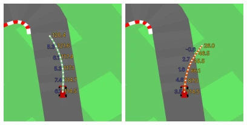
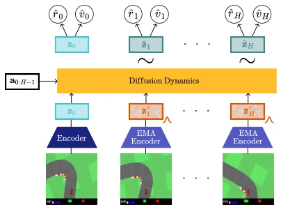
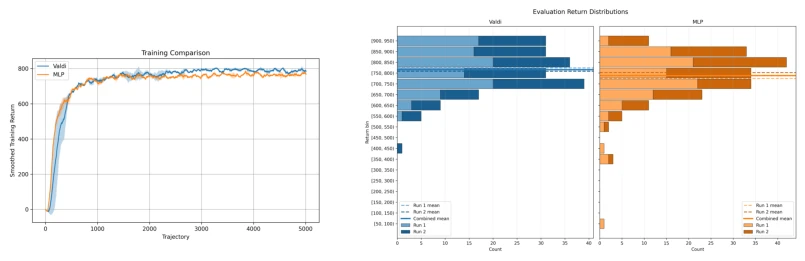
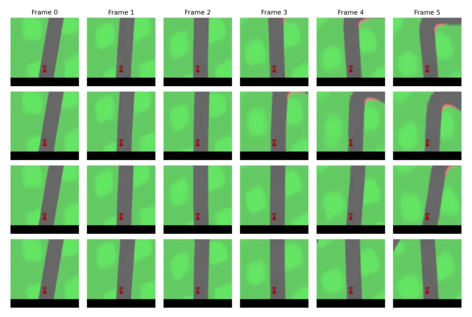

This paper attempts to integrate the "imagination" of diffusion models into real-time planning, which sounds promising, but reality is stark. Valdi replaces the deterministic MLP of TD-MPC with single-step diffusion, barely holding parity on CarRacing. Most ironically, increasing diffusion steps makes the visuals more "colorful," yet control performance declines. This indicates that within a value-guided MPC loop, the "multimodal" advantage of diffusion models may not translate into planning advantages, but instead becomes noise. The authors admit that single-step estimation may not generalize to complex environments, which is simply pouring a bucket of cold water on "diffusion omnipotence." However, being able to train diffusion dynamics models end-to-end within an online control loop at least proves that latent diffusion is not entirely unusable, merely requiring smarter distillation or training strategies. This "single-step" compromise preserves speed but sacrifices the core multi-step denoising capability of diffusion models, raising doubts about its generalization.
研究动机Motivation
世界模型赋能 MPC 的核心矛盾在于：扩散模型擅长建模不确定未来 (Agarwal et al., 2025)，但迭代推理太慢；TD-MPC 等在线规划器依赖确定性 MLP (Hansen et al., 2022)，无法表达多模态动态。现有像素级扩散世界模型 (Alonso et al., 2024) 计算开销大，不适合低延迟规划。此外，潜在世界模型容易陷入表征坍塌 (Maes et al., 2026)。Valdi 试图填补这一空白，将端到端训练的潜在扩散动力学模型引入基于价值的在线规划循环，解决表征坍塌与实时性的平衡问题，探索在低延迟约束下利用扩散模型表达不确定性的可能性。
The core contradiction of world models empowering MPC lies in: diffusion models excel at modeling uncertain futures (Agarwal et al., 2025), but iterative reasoning is too slow; online planners such as TD-MPC rely on deterministic MLPs (Hansen et al., 2022), unable to express multimodal dynamics. Existing pixel-level diffusion world models (Alonso et al., 2024) incur high computational overhead and are unsuitable for low-latency planning. Furthermore, latent world models are prone to representation collapse (Maes et al., 2026). Valdi attempts to fill this gap by introducing end-to-end trained latent diffusion dynamics models into value-based online planning loops, addressing the balance between representation collapse and real-time performance, and exploring the possibility of utilizing diffusion models to express uncertainty under low-latency constraints.

Figure 1: Valdi is a diffusion model that predicts action-sequence conditioned rewards and values, enabling Model Predictive Control. We show its predictions for a good and bad action sequence in the CarRacing environment (Towers et al., 2024).
Valdi adopts a TOLD architecture similar to TD-MPC, comprising four modules: representation, dynamics, reward, and value. The innovation lies in replacing the MLP with a bidirectional Transformer as the dynamics model, employing a velocity parameterized (Salimans & Ho, 2022) diffusion process. During training, the encoder Eθ and diffusion model Dθ are jointly optimized end-to-end, rather than being frozen, and SIGReg regularization is introduced to prevent collapse. During inference, only single-step denoising is used to predict the entire H-step trajectory, rather than iterative generation, to match low-latency MPC requirements. The value function Vθ predicts state values rather than action values, paired with a Cross Entropy Method (CEM) solver for planning. This design aims to balance computational efficiency and dynamic expressiveness through single-step diffusion, with the loss function comprising diffusion loss, reward error, and temporal difference loss.

Figure 2: Method. Valdi encodes states, conditions dif- fusion dynamics on an action sequence and noised latents from a target encoder, and uses the denoised latent trajec- tory for reward and value prediction.
Tested in the CarRacing environment, with the baseline being a deterministic MLP model. The main evaluations cover control performance, trajectory diversity (LPIPS), and value function quality. Results show that the single-step diffusion Valdi achieves control performance on par with the MLP baseline. Increasing inference steps significantly improves visual diversity but leads to a decline in task performance, exposing the tension between prediction expressiveness and control quality. Value function diagnostics indicate that although short-horizon error is large, in terms of long-horizon planning depth, Valdi's value estimation is more self-consistent and closer to the ground truth state (Grounding). This implies that diffusion models may be more robust in long-range prediction, although the training-inference mismatch limits their immediate gains. The experiments reveal the trade-off between multimodal prediction and planning performance, pointing the way for future work.

Figure 4: The returns that our system and our baseline obtain during training time (left). The performance both runs of both systems obtain at evaluation time (right).

Figure 5: Diverse trajectories generated from the same starting state with 8 diffusion steps. Frame 0 is identical for all trajectories and serves as the initial state. Frames one through five are imagined by our dynamics model in latent space and then decoded. Our model shows the capacity to generate diverse futures.